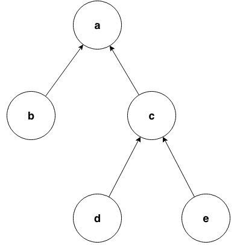

Expressions¶
An expression evaluates to a set of values and has a type.
For example, the expression 1 + 2
evaluates to the integer 3 and the expression "QL" evaluates to the string "QL". 1 + 2 has type int and "QL" has type string.
The following sections describe the expressions that are available in QL.
Variable references¶
A variable reference is the name of a declared variable. This kind of expression has the same type as the variable it refers to.
For example, if you have declared the variables int i and LocalScopeVariable lsv, then
the expressions i and lsv have types int and LocalScopeVariable respectively.
You can also refer to the variables this and result. These are used in predicate definitions and act in the same way as other variable references.
Literals¶
You can express certain values directly in QL, such as numbers, booleans, and strings.
Boolean literals: These are the values
trueandfalse.Integer literals: These are sequences of decimal digits (
0through9), possibly starting with a minus sign (-). For example:0 42 -2048
Float literals: These are sequences of decimal digits separated by a dot (
.), possibly starting with a minus sign (-). For example:2.0 123.456 -100.5
String literals: These are finite strings of 16-bit characters. You can define a string literal by enclosing characters in quotation marks (
"..."). Most characters represent themselves, but there are a few characters that you need to “escape” with a backslash. The following are examples of string literals:"hello" "They said, \"Please escape quotation marks!\""
See String literals in the QL language specification for more details.
Note: there is no “date literal” in QL. Instead, to specify a date, you should convert a string to the date that it represents using the
toDate()predicate. For example,"2016-04-03".toDate()is the date April 3, 2016, and"2000-01-01 00:00:01".toDate()is the point in time one second after New Year 2000.- The following string formats are recognized as dates:
- ISO dates, such as
"2016-04-03 17:00:24". The seconds part is optional (assumed to be"00"if it’s missing), and the entire time part can also be missing (in which case it’s assumed to be"00:00:00"). - Short-hand ISO dates, such as
"20160403". - UK-style dates, such as
"03/04/2016". - Verbose dates, such as
"03 April 2016".
- ISO dates, such as
Parenthesized expressions¶
A parenthesized expression is an expression surrounded by parentheses, ( and ). This
expression has exactly the same type and values as the original expression.
Parentheses are useful for grouping expressions together to remove ambiguity and improve
readability.
Ranges¶
A range expression denotes a range of values ordered between two expressions. It consists of
two expressions separated by .. and enclosed in brackets ([ and ]).
For example, [3 .. 7] is a valid range expression. Its values are any integers between
3 and 7 (including 3 and 7 themselves).
In a valid range, the start and end expression are integers, floats, or dates. If one of them is a date, then both must be dates. If one of them is an integer and the other a float, then both are treated as floats.
Set literal expressions¶
A set literal expression allows the explicit listing of a choice between several values.
It consists of a comma-separated collection of expressions that are enclosed in brackets ([ and ]).
For example, [2, 3, 5, 7, 11, 13, 17, 19, 23, 29] is a valid set literal expression.
Its values are the first ten prime numbers.
The values of the contained expressions need to be of compatible types for a valid set literal expression. Furthermore, at least one of the set elements has to be of a type that is a supertype of the types of all the other contained expressions.
Set literals are supported from release 2.1.0 of the CodeQL CLI, and release 1.24 of LGTM Enterprise.
Super expressions¶
Super expressions in QL are similar to super expressions in other programming languages, such as Java. You can use them in predicate calls, when you want to use the predicate definition from a supertype. In practice, this is useful when a predicate inherits two definitions from its supertypes. In that case, the predicate must override those definitions to avoid ambiguity. However, if you want to use the definition from a particular supertype instead of writing a new definition, you can use a super expression.
In the following example, the class C inherits two definitions of the predicate
getANumber()—one from A and one from B.
Instead of overriding both definitions, it uses the definition from B.
class A extends int {
A() { this = 1 }
int getANumber() { result = 2 }
}
class B extends int {
B() { this = 1 }
int getANumber() { result = 3 }
}
class C extends A, B {
// Need to define `int getANumber()`; otherwise it would be ambiguous
int getANumber() {
result = B.super.getANumber()
}
}
from C c
select c, c.getANumber()
The result of this query is 1, 3.
Calls to predicates (with result)¶
Calls to predicates with results are themselves expressions, unlike calls to predicates without results which are formulas. For more information, see “Calls to predicates.”
A call to a predicate with result evaluates to the values of the result variable of the
called predicate.
For example a.getAChild() is a call to a predicate getAChild() on a variable a.
This call evaluates to the set of children of a.
Aggregations¶
An aggregation is a mapping that computes a result value from a set of input values that are specified by a formula.
The general syntax is:
<aggregate>(<variable declarations> | <formula> | <expression>)
The variables declared in <variable declarations> are called
the aggregation variables.
Ordered aggregates (namely min, max, rank, concat, and strictconcat) are
ordered by their <expression> values by default. The ordering is either numeric (for
integers and floating point numbers) or lexicographic (for strings). Lexicographic ordering is
based on the Unicode value
of each character.
To specify a different order, follow <expression> with the keywords order by, then
the expression that specifies the order, and optionally the keyword asc or desc
(to determine whether to order the expression in ascending or descending order). If you don’t
specify an ordering, it defaults to asc.
The following aggregates are available in QL:
count: This aggregate determines the number of distinct values of<expression>for each possible assignment of the aggregation variables.For example, the following aggregation returns the number of files that have more than
500lines:count(File f | f.getTotalNumberOfLines() > 500 | f)
If there are no possible assignments to the aggregation variables that satisfy the formula, as in
count(int i | i = 1 and i = 2 | i), thencountdefaults to the value0.
minandmax: These aggregates determine the smallest (min) or largest (max) value of<expression>among the possible assignments to the aggregation variables. In this case,<expression>must be of numeric type or of typestring.For example, the following aggregation returns the name of the
.jsfile (or files) with the largest number of lines:max(File f | f.getExtension() = "js" | f.getBaseName() order by f.getTotalNumberOfLines())
The following aggregation returns the minimum string
sout of the three strings mentioned below, that is, the string that comes first in the lexicographic ordering of all the possible values ofs. (In this case, it returns"De Morgan".)min(string s | s = "Tarski" or s = "Dedekind" or s = "De Morgan" | s)
avg: This aggregate determines the average value of<expression>for all possible assignments to the aggregation variables. The type of<expression>must be numeric. If there are no possible assignments to the aggregation variables that satisfy the formula, the aggregation fails and returns no values. In other words, it evaluates to the empty set.For example, the following aggregation returns the average of the integers
0,1,2, and3:avg(int i | i = [0 .. 3] | i)
sum: This aggregate determines the sum of the values of<expression>over all possible assignments to the aggregation variables. The type of<expression>must be numeric. If there are no possible assignments to the aggregation variables that satisfy the formula, then the sum is0.For example, the following aggregation returns the sum of
i * jfor all possible values ofiandj:sum(int i, int j | i = [0 .. 2] and j = [3 .. 5] | i * j)
concat: This aggregate concatenates the values of<expression>over all possible assignments to the aggregation variables. Note that<expression>must be of typestring. If there are no possible assignments to the aggregation variables that satisfy the formula, thenconcatdefaults to the empty string.For example, the following aggregation returns the string
"3210", that is, the concatenation of the strings"0","1","2", and"3"in descending order:concat(int i | i = [0 .. 3] | i.toString() order by i desc)
The
concataggregate can also take a second expression, separated from the first one by a comma. This second expression is inserted as a separator between each concatenated value.For example, the following aggregation returns
"0|1|2|3":concat(int i | i = [0 .. 3] | i.toString(), "|")
rank: This aggregate takes the possible values of<expression>and ranks them. In this case,<expression>must be of numeric type or of typestring. The aggregation returns the value that is ranked in the position specified by the rank expression. You must include this rank expression in brackets after the keywordrank.For example, the following aggregation returns the value that is ranked 4th out of all the possible values. In this case,
8is the 4th integer in the range from5through15:rank[4](int i | i = [5 .. 15] | i)
Note that the rank indices start at
1, sorank[0](...)returns no results.
strictconcat,strictcount, andstrictsum: These aggregates work likeconcat,count, andsumrespectively, except that they are strict. That is, if there are no possible assignments to the aggregation variables that satisfy the formula, then the entire aggregation fails and evaluates to the empty set (instead of defaulting to0or the empty string). This is useful if you’re only interested in results where the aggregation body is non-trivial.
unique: This aggregate depends on the values of<expression>over all possible assignments to the aggregation variables. If there is a unique value of<expression>over the aggregation variables, then the aggregate evaluates to that value. Otherwise, the aggregate has no value.For example, the following query returns the positive integers
1,2,3,4,5. For negative integersx, the expressionsxandx.abs()have different values, so the value foryin the aggregate expression is not uniquely determined.from int x where x in [-5 .. 5] and x != 0 select unique(int y | y = x or y = x.abs() | y)
The
uniqueaggregate is supported from release 2.1.0 of the CodeQL CLI, and release 1.24 of LGTM Enterprise.
Evaluation of aggregates¶
In general, aggregate evaluation involves the following steps:
- Determine the input variables: these are the aggregation variables declared in
<variable declarations>and also the variables declared outside of the aggregate that are used in some component of the aggregate. - Generate all possible distinct tuples (combinations) of the values of input variables such that the
<formula>holds true. Note that the same value of an aggregate variable may appear in multiple distinct tuples. All such occurrences of the same value are treated as distinct occurrences when processing tuples. - Apply
<expression>on each tuple and collect the generated (distinct) values. The application of<expression>on a tuple may result in generating more than one value. - Apply the aggregation function on the values generated in step 3 to compute the final result.
Let us apply these steps to the sum aggregate in the following query:
select sum(int i, int j |
exists(string s | s = "hello".charAt(i)) and exists(string s | s = "world!".charAt(j)) | i)
Input variables:
i,j.All possible tuples
(<value of i>, <value of j>)satisfying the given condition:(0, 0), (0, 1), (0, 2), (0, 3), (0, 4), (0, 5), (1, 0), (1, 1), ..., (4, 5).30 tuples are generated in this step.
Apply the
<expression> ion all tuples. This means selecting all values ofifrom all tuples:0, 0, 0, 0, 0, 0, 1, 1, 1, 1, 1, 1, 2, 2, 2, 2, 2, 2, 3, 3, 3, 3, 3, 3, 4, 4, 4, 4, 4, 4.Apply the aggregation function
sumon the above values to get the final result60.
If we change <expression> to i + j in the above query, the query result is 135 since
applying i + j on all tuples results in following values:
0, 1, 2, 3, 4, 5, 1, 2, 3, 4, 5, 6, 2, 3, 4, 5, 6, 7, 3, 4, 5, 6, 7, 8, 4, 5, 6, 7, 8, 9.
Next, consider the following query:
select count(string s | s = "hello" | s.charAt(_))
sis the input variable of the aggregate.- A single tuple
"hello"is generated in this step. - The
<expression> charAt(_)is applied on this tuple. The underscore_incharAt(_)is a don’t-care expression, which represents any value.s.charAt(_)generates four distinct valuesh, e, l, o. - Finally,
countis applied on these values, and the query returns4.
Omitting parts of an aggregation¶
The three parts of an aggregation are not always required, so you can often write the aggregation in a simpler form:
If you want to write an aggregation of the form
<aggregate>(<type> v | <expression> = v | v), then you can omit the<variable declarations>and<formula>parts and write it as follows:<aggregate>(<expression>)
For example, the following aggregations determine how many times the letter
loccurs in string"hello". These forms are equivalent:count(int i | i = "hello".indexOf("l") | i) count("hello".indexOf("l"))
If there only one aggregation variable, you can omit the
<expression>part instead. In this case, the expression is considered to be the aggregation variable itself. For example, the following aggregations are equivalent:avg(int i | i = [0 .. 3] | i) avg(int i | i = [0 .. 3])
As a special case, you can omit the
<expression>part fromcounteven if there is more than one aggregation variable. In such a case, it counts the number of distinct tuples of aggregation variables that satisfy the formula. In other words, the expression part is considered to be the constant1. For example, the following aggregations are equivalent:count(int i, int j | i in [1 .. 3] and j in [1 .. 3] | 1) count(int i, int j | i in [1 .. 3] and j in [1 .. 3])
You can omit the
<formula>part, but in that case you should include two vertical bars:<aggregate>(<variable declarations> | | <expression>)
This is useful if you don’t want to restrict the aggregation variables any further. For example, the following aggregation returns the maximum number of lines across all files:
max(File f | | f.getTotalNumberOfLines())
Finally, you can also omit both the
<formula>and<expression>parts. For example, the following aggregations are equivalent ways to count the number of files in a database:count(File f | any() | 1) count(File f | | 1) count(File f)
Monotonic aggregates¶
In addition to standard aggregates, QL also supports monotonic aggregates.
Monotonic aggregates differ from standard aggregates in the way that they deal with the
values generated by the <expression> part of the formula:
- Standard aggregates take the
<expression>values for each<formula>value and flatten them into a list. A single aggregation function is applied to all the values. - Monotonic aggregates take an
<expression>for each value given by the<formula>, and create combinations of all the possible values. The aggregation function is applied to each of the resulting combinations.
In general, if the <expression> is total and functional, then monotonic aggregates are
equivalent to standard aggregates. Results differ when there is not precisely one <expression>
value for each value generated by the <formula>:
- If there are missing
<expression>values (that is, there is no<expression>value for a value generated by the<formula>), monotonic aggregates won’t compute a result, as you cannot create combinations of values including exactly one<expression>value for each value generated by the<formula>. - If there is more than one
<expression>per<formula>result, you can create multiple combinations of values including exactly one<expression>value for each value generated by the<formula>. Here, the aggregation function is applied to each of the resulting combinations.
Recursive monotonic aggregates¶
Monotonic aggregates may be used recursively, but the recursive call may only appear in the expression, and not in the range. The recursive semantics for aggregates are the same as the recursive semantics for the rest of QL. For example, we might define a predicate to calculate the distance of a node in a graph from the leaves as follows:
int depth(Node n) {
if not exists(n.getAChild())
then result = 0
else result = 1 + max(Node child | child = n.getAChild() | depth(child))
}
Here the recursive call is in the expression, which is legal. The recursive semantics for aggregates are the same as the recursive semantics for the rest of QL. If you understand how aggregates work in the non-recursive case then you should not find it difficult to use them recursively. However, it is worth seeing how the evaluation of a recursive aggregation proceeds.
Consider the depth example we just saw with the following graph as input (arrows point from children to parents):

Then the evaluation of the depth predicate proceeds as follows:
| Stage | depth | Comments |
|---|---|---|
| 0 | We always begin with the empty set. | |
| 1 | (0, b), (0, d), (0, e) |
The nodes with no children have depth 0. The recursive step for a and c fails to produce a value, since some of their children do not have values for depth. |
| 2 | (0, b), (0, d), (0, e), (1, c) |
The recursive step for c succeeds, since depth now has a value for all its children (d and e). The recursive step for a still fails. |
| 3 | (0, b), (0, d), (0, e), (1, c), (2, a) |
The recursive step for a succeeds, since depth now has a value for all its children (b and c). |
Here, we can see that at the intermediate stages it is very important for the aggregate to fail if some of the children lack a value - this prevents erroneous values being added.
Any¶
The general syntax of an any expression is similar to the syntax of an
aggregation, namely:
any(<variable declarations> | <formula> | <expression>)
You should always include the variable declarations, but the formula and expression parts are optional.
The any expression denotes any values that are of a particular form and that satisfy a
particular condition.
More precisely, the any expression:
- Introduces temporary variables.
- Restricts their values to those that satisfy the
<formula>part (if it’s present). - Returns
<expression>for each of those variables. If there is no<expression>part, then it returns the variables themselves.
The following table lists some examples of different forms of any expressions:
| Expression | Values |
|---|---|
any(File f) |
all Files in the database |
any(Element e | e.getName()) |
the names of all Elements in the database |
any(int i | i = [0 .. 3]) |
the integers 0, 1, 2, and 3 |
any(int i | i = [0 .. 3] | i * i) |
the integers 0, 1, 4, and 9 |
Note
There is also a built-in predicate
any(). This is a predicate that always holds.
Unary operations¶
A unary operation is a minus sign (-) or a plus sign (+) followed by an expression of type
int or float. For example:
-6.28
+(10 - 4)
+avg(float f | f = 3.4 or f = -9.8)
-sum(int i | i in [0 .. 9] | i * i)
A plus sign leaves the values of the expression unchanged, while a minus sign takes the arithmetic negations of the values.
Binary operations¶
A binary operation consists of an expression, followed by a binary operator, followed by another expression. For example:
5 % 2
(9 + 1) / (-2)
"Q" + "L"
2 * min(float f | f in [-3 .. 3])
You can use the following binary operators in QL:
| Name | Symbol |
|---|---|
| Addition/concatenation | + |
| Multiplication | * |
| Division | / |
| Subtraction | - |
| Modulo | % |
If both expressions are numbers, these operators act as standard arithmetic operators. For
example, 10.6 - 3.2 has value 7.4, 123.456 * 0 has value 0, and 9 % 4 has
value 1 (the remainder after dividing 9 by 4).
If both operands are integers, then the result is an integer. Otherwise the result is a
floating-point number.
You can also use + as a string concatenation operator. In this case, at least one of the
expressions must be a string—the other expression is implicitly converted to a string using the
toString() predicate. The two expressions are concatenated, and the result is a string. For
example, the expression 221 + "B" has value "221B".
Casts¶
A cast allows you to constrain the type of an expression. This is similar to casting in other languages, for example in Java.
- You can write a cast in two ways:
- As a “postfix” cast: A dot followed by the name of a type in parentheses.
For example,
x.(Foo)restricts the type ofxtoFoo. - As a “prefix” cast: A type in parentheses followed by another expression.
For example,
(Foo)xalso restricts the type ofxtoFoo.
- As a “postfix” cast: A dot followed by the name of a type in parentheses.
For example,
Note that a postfix cast is equivalent to a prefix cast surrounded by parentheses—x.(Foo)
is exactly equivalent to ((Foo)x).
Casts are useful if you want to call a member predicate that is only defined for a more specific type. For example, the following query selects Java classes that have a direct supertype called “List”:
import java
from Type t
where t.(Class).getASupertype().hasName("List")
select t
Since the predicate getASupertype() is defined for Class, but not for Type, you
can’t call t.getASupertype() directly. The cast t.(Class) ensures that t is
of type Class, so it has access to the desired predicate.
If you prefer to use a prefix cast, you can rewrite the where part as:
where ((Class)t).getASupertype().hasName("List")
Don’t-care expressions¶
This is an expression written as a single underscore _. It represents any value. (You
“don’t care” what the value is.)
Unlike other expressions, a don’t-care expression does not have a type. In practice, this
means that _ doesn’t have any member predicates, so you can’t
call _.somePredicate().
For example, the following query selects all the characters in the string "hello":
from string s
where s = "hello".charAt(_)
select s
The charAt(int i) predicate is defined on strings and usually takes an int argument.
Here the don’t care expression _ is used to tell the query to select characters at
every possible index. The query returns the values h, e, l, and o.